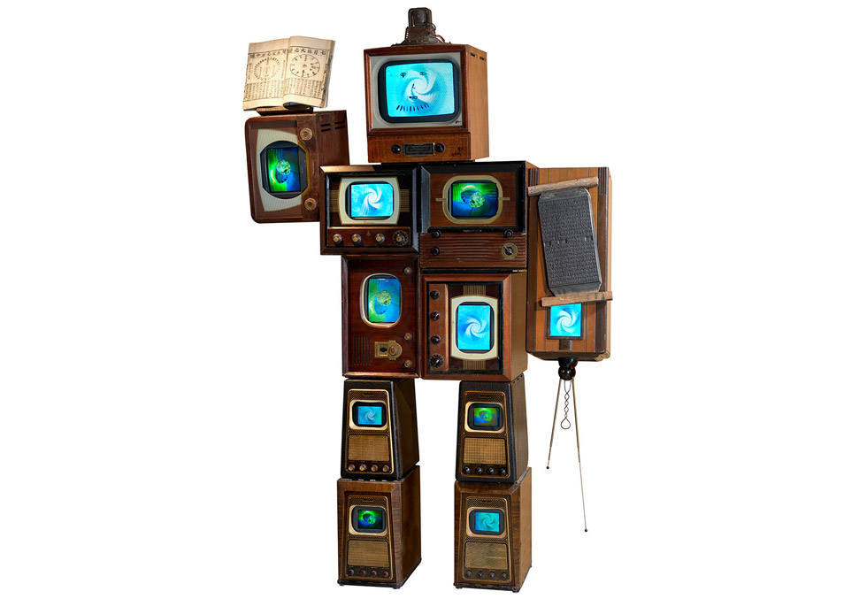
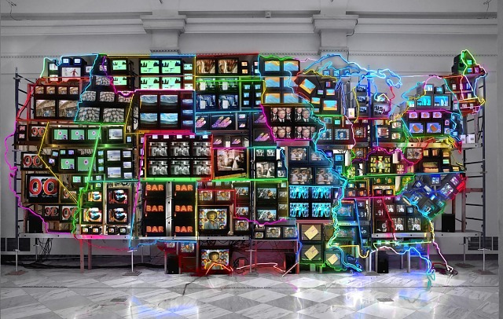
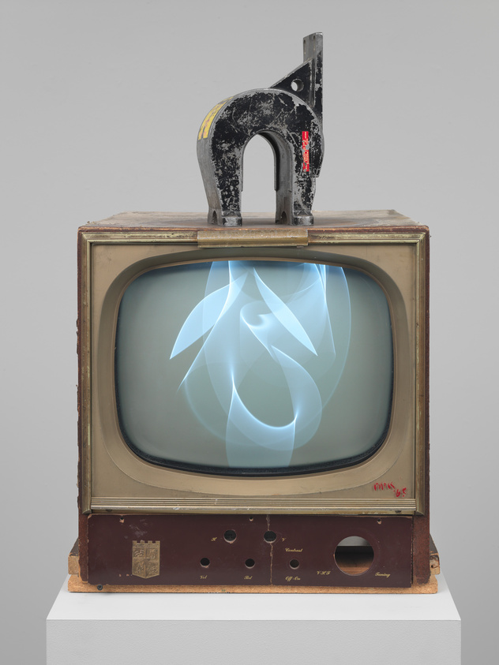

Dohyun Lee
Media Art + Light & Code
빛은 감각의 데이터이며, 코드는 그 데이터를 구조화하는 언어다.
이도현은 빛과 움직임을 디지털 알고리즘으로 해석하며,
사건의 흐름과 감정의 패턴을 시각 신호로 기록한다.
그의 미디어 작업은 센서, 프로젝션, 인터렉티브 모듈을 통해
'보이지 않는 데이터의 기억'을 공간 안에 재현한다.
디지털 코드로 번역된 감각의 기록은
기술과 감정이 교차하는 새로운 형태의 조형 언어가 된다.

1913
Squares with Concentric Circles
색채의 감각적 리듬과 원의 반복

1913
Squares with Concentric Circles
색채의 감각적 리듬과 원의 반복

1913
Squares with Concentric Circles
색채의 감각적 리듬과 원의 반복
이도현 작가의 회화에서 그래픽모듈을 추출하였습니다.
이도현 작가의 회화를 기반으로 기록을 재해석한 시각 언어를 완성했습니다.